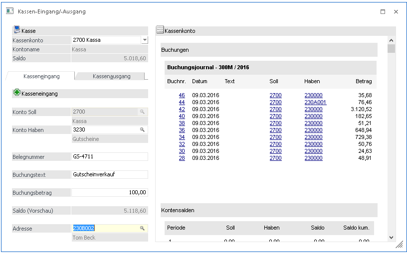

In der WinLine FAKT gibt es den Menüpunkt
1 Erfassen
1 Kassen- Eingang/Ausgang
bzw. kann der Menüpunkt im Kassencockpit mit den Einträgen "Kassen Eingang" bzw. "Kassen Ausgang" geöffnet werden.
Damit ist die rasche und einfache Erfassung von Kassen- Ein- und Ausgangs-Buchungen möglich.
Es können bzw. werden nur B-Buchungen erzeugt. Es werden keine Offenen Posten verwaltet.

Eingabefelder
Ø Kassenkonto
Standardmäßig wird hier das Kassenkonto aus den Kassen-Stammdaten vorgeschlagen. Sind in den Kassen-Stammdaten bei den Benutzereinstellungen abweichende Kassenkonten eingetragen, dann können diese Konten aus der Auswahllistbox ausgewählt werden. Nach der Auswahl des Kontos wird im Feld Saldo der akt. Saldo des Kontos angezeigt.
Ist in den Kassen-Stammdaten nur ein Konto definiert, dann wechselt das Programm automatisch in den Bereich der Gegenkonten (abhängig davon, ob ein Kasseneingang oder ein Kassenausgang ausgewählt wurde).
Ø Konto Haben (Kasseneingang) / Konto Soll (Kassenausgang)
In diesem Feld werden in einem Auswahlfeld alle Konten angezeigt, die in den Kassen-Stammdaten im Bereich "Gegenkonten für Kasseneingang/Kassenausgang" definiert wurden. Wurde in diesem Bereich nichts hinterlegt, kann über die Matchcodefunktion nach Konten gesucht werden.
Hinweis:
Es können nur Konten ohne KORE- und Sachkonten-OP-Zuordnung hinterlegt werden.
Ø Belegnummer
Hier kann eine beliebige Belegnummer eingetragen werden, welche am Formular angedruckt werden kann. Für die Belegnummer gibt es keine Automatik, die Belegnummer muss manuell eingegeben werden.
Ø Buchungstext
In diesem Feld kann ein Buchungstext eingegeben werden. Der Buchungstext kann bereits im Kassenstamm-Menüpunkt definiert werden, dieser ist aber bei der Eingabe editierbar.
Ø Buchungsbetrag
In diesem Feld kann der Buchungsbetrag eingegeben werden. Sobald der Buchungsbetrag bestätigt wird, wird im Feld "Saldo (Vorschau)" der neu errechnete Saldo angezeigt (der sich durch die Buchung ergeben würde).
Ø Adresse
Hier kann ein Kunde bzw. Interessent hinterlegt werden, wenn personalisierter Beleg ausgedruckt werden soll. Diese Adress-Information (Kontonummer, Name, PLZ, Ort und Straße) kann in weiterer Folge am Formular angedruckt werden und wird gleichzeitig in das Feld Notiz der jeweiligen Buchung übergeben.
Hinweis:
Die abgesetzten Buchungen über diesen Menüpunkt werden nicht an das Datenerfassungsprotokoll DEB übergeben.
Hinweis:
Beim Öffnen des Menüpunktes wird geprüft, ob im Menüpunkt Kassenstamm bereits eine Kassenidentifikationsnummer und ein FIBU-Konto hinterlegt sind und ob der Benutzer laut Kassenstamm die Berechtigung hat. Ein Administrator kann den Menüpunkt auch ohne entsprechende Hinterlegung im Kassenstamm aufrufen.
Nachdem Absetzen der Buchung wird eine Quittung ausgedruckt, die die erfassten Werte beinhaltet.